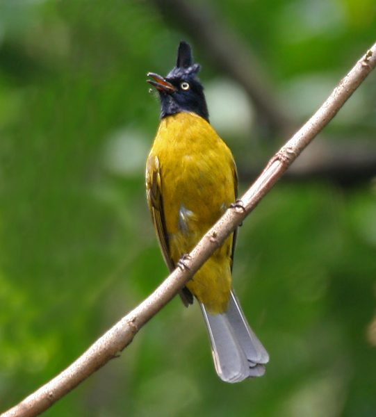

ब्लैक-क्रेस्टेड बुलबुलBlack-crested Bulbul
Pycnonotus flaviventris · Pycnonotidae · BRD-0336

- Scientific name वैज्ञानिक नाम
- Pycnonotus flaviventris (Tickell, 1833)
- Family कुल
- Pycnonotidae
- Hindi हिंदी
- ब्लैक-क्रेस्टेड बुलबुल
- Local names स्थानीय नाम
- black-crested bulbul, black-crested yellow bulbul
- Status here यहाँ की स्थिति
- native
- Movement आवागमन
- Resident, here all year
- Known from कहाँ दर्ज
- Others have published records from the wider Awadh–Purvanchal plain, none yet from Basti–Ayodhya अवध–पूर्वांचल से दूसरों के प्रकाशित अभिलेख, बस्ती–अयोध्या से अभी नहीं
- IUCN IUCN
- LC
- Review समीक्षा
- not yet reviewed
When to look कब देखें
Present all year. साल भर मौजूद।
Tell it apart from इनसे अलग पहचानें
ब्लैक-क्रेस्टेड बुलबुल / Black-crested Bulbul
Pycnonotus flaviventris (Tickell, 1833) — Pycnonotidae
ब्लैक-क्रेस्टेड बुलबुल — तराई के घने साल वनों और बांस के जंगलों में रहने वाली एक अत्यंत सुंदर और चटकीले पीले रंग की बुलबुल है। इसका सिर, लंबा खड़ा कलगीदार शिखा (क्रेस्ट), गला और ठुड्डी चमकीले काले रंग के होते हैं, जबकि पूरा निचला शरीर गहरा पीला होता है। इसकी आंखें सफेद या हल्के पीले रंग की होती हैं जो काले चेहरे पर साफ चमकती हैं। यह पेड़ों की ऊपरी डालियों और झाड़ियों में फल और कीड़े खाती हुई जोड़े या छोटी टोलियों में फुदकती है। इसकी आवाज एक मीठी, रुक-रुक कर निकलने वाली सीटी जैसी होती है।
Quick Identification त्वरित पहचान
| Feature | Description | |
|---|---|---|
| Habit | Active, vocal, arboreal frugivore and insectivore of moist forest thickets | |
| Size | Medium-sized bulbul, similar in proportions to a [[red_vented_bulbul\ | Red-vented Bulbul]] |
| Head & Crest | Entire head, chin, and throat glossy jet-black, topped with a tall pointed crest | |
| Upperparts | Warm olive-yellow above, brightening to rich yellowish on rump and coverts | |
| Underparts | Uniform, brilliant bright golden-yellow from upper breast to under tail-coverts | |
| Eyes | Striking, pale cream-white to pale yellow irises contrasting with black head | |
| Call | Sweet, jerky, whistled phrase weet-tre-trippy-wet, with last three syllables repeated twice or more |
Field tip: Scan fruiting fig trees, wild berry tangles, and bamboo clusters in the northern Terai. The combination of a tall glossy black crest, black throat, brilliant yellow belly, and pale staring eyes is completely distinctive.
हिंदी:
यह एक पीले रंग की बुलबुल है जिसका सिर और नुकीली कलगी चमकीली काली होती है।
इसका पेट चटक पीला और आंखें सफेद जैसी पीली होती हैं जो दूर से ही चमकती हैं।
यह जंगल में जंगली फलों के पेड़ों और बांस के झुरमुटों में टोलियों में घूमती है।
Morphology आकारिकी
Measurements as given by Baker (1922):
| Measurement | Range |
|---|---|
| Total Length | Total length 180 to 190 mm. (Baker 1922) |
The Black-crested Bulbul is a richly coloured passerine. The head, featuring a prominent, erect, pointed feather crest arising from the crown, together with the chin and throat, is completely glossy jet-black.
The upper plumage, mantle, and wing-coverts are rich olive-yellow, becoming brighter and purer yellow on the lower rump and upper tail-coverts. The wing-quills are dark brown, with the primaries and outer secondaries broadly edged with olive-yellow. The tail is brown, with the feathers margined with olive-yellow for most of their length. The sides of the neck and the entire underparts are uniform bright golden-yellow.
The bill is dark horny-black with a yellowish gape. The irises are bright pale yellow or creamy-white. The legs and feet are greyish-brown to plumbeous-brown.
Vocalisations. A rather quiet bird compared to open-country bulbuls. Its song is a sweet, melodious, though somewhat jerky whistle, phonetically transcribed as weet-tre-trippy-wet, with the last three syllables repeated twice or more (Baker 1922, p. 398).
हिंदी:
इसकी कुल लंबाई 180 से 190 मिमी तक होती है (बेकर 1922)।
इसका सिर और कलगी चमकीले काले तथा बाकी शरीर सुनहरे पीले रंग का होता है।
यह अन्य बुलबुलों की तरह बहुत शोर नहीं मचाती और इसकी बोली मीठी सीटी जैसी होती है।
Behaviour & Ecology व्यवहार और पारिस्थितिकी
Pycnonotus flaviventris is an inhabitant of light scrub- and bamboo-jungle, outskirts of deep forest, patches of cultivation in forest, and open places near roads and streams (Baker 1922, p. 398). It frequents indifferently scrub, bushes, bamboos, and high trees.
During the cold weather, it gathers in flocks of half-a-dozen to a score or more (Baker 1922, p. 398). It moves through foliage with agile, bounding hops, frequently visiting flowering and fruiting trees.
हिंदी:
यह पक्षी झाड़ियों, बांसों और ऊंचे पेड़ों पर समान रूप से घूमता है (बेकर 1922)।
सर्दियों में यह छह से बीस या उससे अधिक पक्षियों के झुंड में रहता है (बेकर 1922)।
यह जंगल के किनारों, सड़कों और नदियों के पास वाले खुले स्थानों पर रहता है।
Life Cycle / Phenology जीवन चक्र
Breeding extends from early March through late August, with the greatest nesting activity occurring in May and June (Baker 1922, p. 398).
The nest is a deep cup, remarkably neatly and well made of tan-coloured materials with dead leaves prominent, lined with fine grass-stems or moss roots (Baker 1922, p. 398). A small clutch of speckled eggs is laid.
हिंदी:
इसका घोंसला बनाने का समय मार्च से अगस्त तक होता है, मुख्य रूप से मई और जून में (बेकर 1922)।
यह सूखी पत्तियों और बारीक घासों या काई की जड़ों से कटोरे जैसा सुंदर घोंसला बनाती है (बेकर 1922)।
यह घोंसले में चित्तीदार अंडों का एक छोटा समूह देती है।
Host Plants or Prey आहार
The Black-crested Bulbul feeds on insects and fruit (Baker 1922, p. 398):
- Insects and wild fruits of forest trees and shrubs (Baker 1922, p. 398)
- Wild strawberries when these are on the ground (Baker 1922, p. 398)
- Termites when coming from the ground (Baker 1922, p. 398)
हिंदी:
यह कीड़े और जंगली फल खाता है (बेकर 1922)।
यह जमीन पर मिलने वाली जंगली स्ट्रॉबेरी और जमीन से निकलने वाली दीमकों को भी खाता है (बेकर 1922)।
Predators / Natural Enemies शत्रु
Small accipiters, tree-climbing snakes, and small mammalian carnivores prey on small passerines of this size. No source opened for this atlas names a specific predator of this bird.
हिंदी:
शिकारी पक्षी, पेड़ों पर चढ़ने वाले सांप और छोटे मांसाहारी इस आकार की बुलबुलों का शिकार करते हैं। इस एटलस के लिए खोले गए किसी स्रोत में इसके किसी विशिष्ट शिकारी का नाम नहीं है।
Agricultural / Human Relevance कृषि प्रासंगिकता
The Black-crested Bulbul frequents forest edges and patches of cultivation near roads and streams (Baker 1922, p. 398). It is protected under the Wildlife (Protection) Act, 1972.
हिंदी:
यह जंगलों के किनारों और खेती के टुकड़ों में घूमता है (बेकर 1922)। यह वन्यजीव (संरक्षण) अधिनियम, 1972 के तहत संरक्षित है।
Expected Locally स्थानीय रूप से अपेक्षित
Not a field record. Written from published accounts for eastern Uttar Pradesh. No confirmed local sighting yet — if you have seen it, that is what the atlas needs.
अभी तक स्थानीय पुष्टि नहीं। यह विवरण प्रकाशित स्रोतों से है, किसी अवलोकन से नहीं।
Search along moist bamboo ravines, dense sal forest undergrowth, and riverine thickets in the northern Terai sanctuaries.
GBIF holds published records from the wider Awadh–Purvanchal plain, none yet from Basti–Ayodhya.
A first record would be a photograph of the bird with place and date, sent through the About page.
Distribution वितरण
Global range: Resident across the Himalayas, northeastern India, southern China, and mainland Southeast Asia.
In India: Distributed along the Himalayas from the Sutlej Valley east to Assam, parts of central India, and the northeastern hill states.
In Uttar Pradesh: Recorded in the northern Terai districts of Shravasti, Lakhimpur Kheri, Bahraich, and Balrampur.
In Basti district / eastern UP: No published records from Basti or Ayodhya; known in eastern UP from the forested sub-Himalayan belt near the Nepal frontier.
हिंदी:
यह हिमालय की तराई और उत्तर-पूर्वी भारत से लेकर म्यांमार और थाईलैंड के जंगलों में पाई जाती है।
उत्तर प्रदेश में इसके रिकॉर्ड श्रावस्ती, लखीमपुर खीरी, बहराइच और बलरामपुर के तराई वनों से हैं।
Research Questions शोध प्रश्न
- What are the dominant native fig and wild berry species consumed by Black-crested Bulbuls in northern UP sal forests? / उत्तरी उत्तर प्रदेश के साल वनों में यह बुलबुल मुख्य रूप से किन जंगली गूलर और फलों को खाती है?
- How does the availability of dense bamboo thickets correlate with breeding territory occupancy in the Terai? / तराई में बांस के झुरमुटों की मौजूदगी से इस बुलबुल के घोंसले बनाने के स्थानों पर क्या असर पड़ता है?
- What is the composition of mixed-species foraging flocks joined by this bulbul during winter?
- How do selective forest logging and understorey clearance affect the persistence of resident pairs?
- Can amateur observers document seasonal frugivory by observing visiting birds at fruiting shrubs along forest edges? (A student can record feeding visits and plant species without equipment.)
Similar Species मिलती-जुलती प्रजातियाँ
| Species | How to tell apart | हिंदी | |
|---|---|---|---|
| [[red_vented_bulbul\ | Red-vented Bulbul]] (Pycnonotus cafer) | Earth-brown plumage with dark scale-like markings, crimson-red undertail-coverts, white rump, and dark brown crest; widespread in gardens | गुलदुम बुलबुल |
| [[red_whiskered_bulbul\ | Red-whiskered Bulbul]] (Pycnonotus jocosus) | Brown back, white underparts, tall pointed crest, red whisker patch behind the eye, and scarlet undertail-coverts | गुलाबी बुलबुल |
Field rule: The entirely glossy jet-black head, throat, and crest, contrasted with brilliant golden-yellow underparts and pale yellow eyes, distinguish the Black-crested Bulbul from all other bulbuls.
हिंदी:
गुलदुम बुलबुल के शरीर पर कत्थई रंग और पूंछ के नीचे लाल धब्बा होता है, जबकि ब्लैक-क्रेस्टेड बुलबुल का पेट चटक पीला और पूरा सिर कलगी सहित काला होता है।
Taxonomy & Classification वर्गीकरण
Original description. Described by Samuel Richard Tickell in 1833 in the Journal of the Asiatic Society of Bengal (vol. 2, p. 573), under the basionym Vanga flaviventris. The type locality is Dholbhum, eastern India.
Synonyms and historical names. Stuart Baker (1922, p. 397) treated the bird under Otocompsa flaviventris, noting its long crest and rich yellow coloration.
Subspecies. Multiple subspecies are recognized across Asia; northern Indian and Himalayan foothill populations represent the nominate race Pycnonotus flaviventris flaviventris (Tickell, 1833).
Family and order placement. Order Passeriformes (songbirds); family Pycnonotidae (bulbuls); genus Pycnonotus.
IUCN status rationale. Evaluated as Least Concern (LC) by the IUCN Red List due to its extremely vast range and large, stable global population.
हिंदी:
सैमुअल रिचर्ड टिकल ने 1833 में इसका वर्णन किया था। यह पिकनोनोटिडी (बुलबुल) कुल का सदस्य है और संकटमुक्त (LC) है।
Photo Gallery फोटो गैलरी
No photos yet — add field photos to media/species/black_crested_bulbul/ and run node scripts/sync_photos.js.
Photos needed आवश्यक फोटो
- [ ] Adult perched in bamboo showing glossy black crest and yellow belly (बांस पर बैठी पीली बुलबुल)
- [ ] Profile showing pale eyes and black throat (सफेद आंखें और काला गला)
References संदर्भ
- Tickell, S. R. (1833). Descriptions of New Species of Birds. Journal of the Asiatic Society of Bengal, vol. 2, p. 573 (as Vanga flaviventris).
- Baker, E. C. S. (1922). The Fauna of British India, Including Ceylon and Burma. Birds. Vol. 1. Taylor & Francis, London, p. 397 (as Otocompsa flaviventris).
- Ali, S. & Ripley, S. D. (1987). Compact Handbook of the Birds of India and Pakistan. Oxford University Press, New Delhi.
- Grimmett, R., Inskipp, C. & Inskipp, T. (2011). Birds of the Indian Subcontinent. 2nd ed. Christopher Helm, London.
- BirdLife International (2016). Pycnonotus flaviventris. The IUCN Red List of Threatened Species 2016: e.T103826151A104338610. doi:10.2305/iucn.uk.2016-3.rlts.t103826151a104338610.en
- GBIF Occurrence Data — Pycnonotus flaviventris, India (2025).
Source file: species/fauna/birds/black_crested_bulbul.md